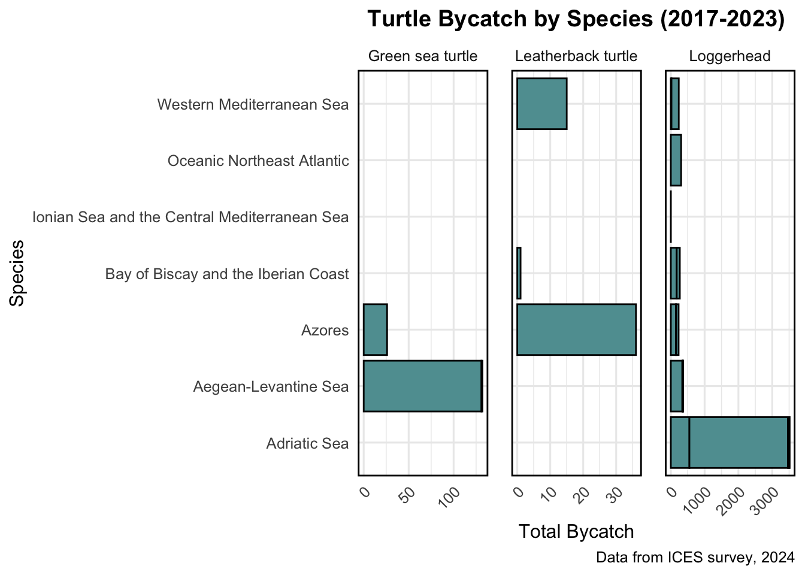
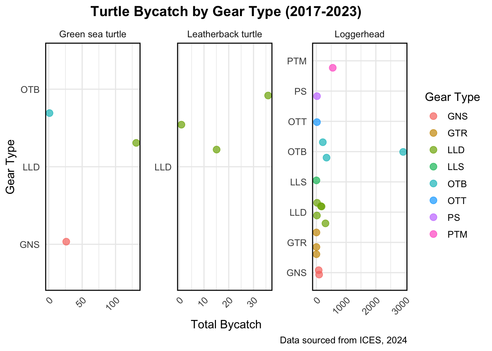
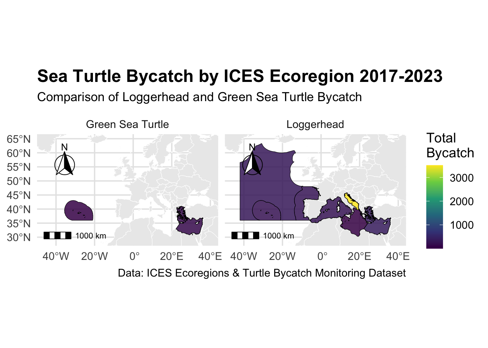

An analysis on Leatherback, Green and Loggerhead sea turtle bycatch from ICES 2017-2023 data
Completed for the final report for EVR 628
Author
Caitlin Coyle
Introduction
Green sea turtles, leatherback sea turtles, and loggerhead sea turtles are endangered species listed on the ICUN red list. Their vulnerability in population sizes makes bycatch an important metric for analyzing threats to the three species. Using bycatch data from ICES ecoregions from 2017-2023, we will investigate the levels of bycatch per species and region, as well as understand what kinds of gear are the most problematic.
Turtle exclusion devices are not currently required in countries outisde of the United States to limit bycatch impact, and therefore we could use this data to promote the use of TEDs within other countries, specifically ICES ecoregions
Objectives
Accumulate numbers for total bycatch by cleaning the data
Analyze areas in which bycatch are the highest per species
Map the geographical data for the two species with highest bycatch
Analyze the findings to gather suggestions for lawmakers and scientists
Data Source
data/raw folder contains the : ICES. 2024. Bycatch of endangered, threatened and protected species of marine mammals, seabirds and marine turtles, and selected fish species of bycatch relevance. In Report of the ICES Advisory Committee, 2024. ICES Advice 2024, byc.eu. https://doi.org/10.17895/ices.advice.27999401
data/processed is where turtle_bycatch_clean.rds can be found which shows bycatch totals, species, gear type used, and ecoregion it was caught in
scripts/processing shows data_processing.r with the script to clean the data and produce turtle_bycatch_clean.rds
scripts/content shows data_visualization.r script that shows the plots of the data and spatial_data_visualization.r which maps the bycatch data over spatial data Snippet of theturtle_bycatch_clean.rds data:
Firstly, I took the raw data and used the library(janitor) package to clean the names of the column, rename some columns with confusing titles, and make a new column that created a combined total bycatch to make plotting easier
Secondly, I cleaned out columns that were irrelevant to the question I was trying to answer and used mutate and filter functions for the data to only have sea turtles, since other species are included in the raw data.
Lastly, it was executed to the data/processed folder Using code from the data_visualization.r and spatial_data_visualization.r scripts
Code
#Load packages------------------------------------library(tidyverse)library(dplyr)library(stringr)library (cowplot)#used for additonal cleaning#Load Data-----------------------------------------turtle_bycatch <-read_rds("data/processed/turtle_bycatch_clean.rds")view(turtle_bycatch) #checking data# Fix a capitalization errorturtle_bycatch <- turtle_bycatch |>mutate(species_common_name =str_to_sentence(species_common_name))view(turtle_bycatch) #only noticed when I made the plot## VISUALIZING THE DATA-----------------------------------------# Building a plot that shows bycatch per ecoregionp1 <-ggplot(data = turtle_bycatch,mapping =aes(x = total_bycatch, y = ecoregion, fill = species_common_name)) +geom_col(fill ="cadetblue", color ="black") +#had some issues with the black linesfacet_wrap(~species_common_name, scales ="free_x") +#showing facet wraplabs(title ="Turtle Bycatch by Species (2017-2023)",x ="Total Bycatch",y ="Species",caption ="Data from ICES survey, 2024") +theme_minimal(base_size =12) +theme(plot.title =element_text(hjust =0.5, face ="bold"),axis.text.x =element_text(angle =45, hjust =1),panel.border =element_rect(color ="black", fill =NA, linewidth =1), # use linewidth instead of sizepanel.spacing =unit(1, "lines")) #additional work for cleanlinessprint(p1) #view the new plot

shows plots of turtle bycatch by gear type and ecoregion
Code
# EXPORT PLOT AS A PNGggsave(plot = p1,filename ="results/img/turtle_ecoregion.png")# SECOND PLOT: shows turtle bycatch per gear type used## Since data for loggerhead > leatherback and green, facet will be used againp2 <-ggplot(turtle_bycatch, aes(x = total_bycatch, y = gear_type,color = gear_type)) +geom_jitter(width =0.2, size =3, alpha =0.7) +facet_wrap(~species_common_name, scale ="free") +labs(title ="Turtle Bycatch by Gear Type (2017-2023)",x ="Total Bycatch",y ="Gear Type",color ="Gear Type",caption ="Data sourced from ICES, 2024" ) +theme_minimal(base_size =12) +theme(plot.title =element_text(hjust =0.5, face ="bold"),axis.text.x =element_text(angle =45, hjust =1),panel.border =element_rect(color ="black", fill =NA, linewidth =1), # use linewidth instead of sizepanel.spacing =unit(1, "lines"))print(p2)

shows plots of turtle bycatch by gear type and ecoregion
The next steps were to configure a map using spatial data from ICES ecoregions in order to overlay the bycatch data with physical mapping coordinates to better visualize the areas where bycatch is occuring and at which densities 4. Downloading the packages required to work with vector data, like library(mapview), library(ggspatial), library(sf),library(rnaturalearth) 5. In order to do a left_join for the spatial data and the bycatch data, I had to preform some minor cleanings using the stringr package and janitor packages 6. Then I was able to left_join both data sets in order to use the sf function and render a visual map, which can be seen below

Shows the bycatch by ecoregion for Green sea turtle and Loggerhead
Main Findings
Loggerhead sea turtles had a outstandingly high volume of bycatch, most notably from the Adriatic Sea with just under 3,000 individuals from otter trawl
Leatherback turtles highest bycatch count was from the Azores with a total of 36 individuals, from longlines
Longlines were also responsible for the most bycatch for green sea turtles, with their totals of 131 individuals from the Aegean-Levantine Sea From these findings, we might conclude that there is a need for TED or other forms of protection against bycatch for these two commonly caught turtle species.
References
ICES. 2024. Bycatch of endangered, threatened and protected species of marine mammals, seabirds and marine turtles, and selected fish species of bycatch relevance. In Report of the ICES Advisory Committee, 2024. ICES Advice 2024, byc.eu. https://doi.org/10.17895/ices.advice.27999401